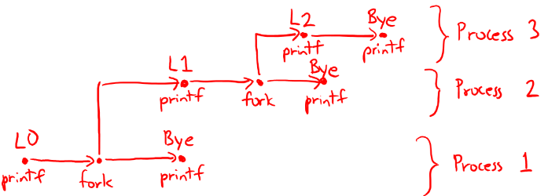

Solutions to Practice Problems from week 9
Question 1: Dynamic Memory
We use dynamic memory because:
- A. The heap is significantly faster than the stack
- B. Storing data on the stack requires knowing the size of that data at compile time
- C. The stack is prone to corruption from buffer overflows
- D. None of the above
Student Responses
- A : 18%
- B : 53%
- C : 24%
- D : 6%
Solutions
- A: Recall that to allocate some space in the stack, all that was needed was to move the stack pointer (
%rsp) using a simplesubinstruction. For dynamic memory allocation (such asmalloc()), we needed a more elaborate and complicated scheme such as the ones you implemented in project 2. Hence, stack allocation (or static memory allocation) is significantly faster than the heap (dynamic memory allocation) and thus this answer is incorrect. -
B: This is the correct answer. One of our motivations for using dynamic memory allocation was that we did not know ahead of time how much memory our program would need. Indeed, for the queue lab, since we didn’t know how many ‘nodes’ would be added to our queue, we needed to call
malloc()as many times as was needed. - C: Although the stack is prone to corruption (as you saw in project 3), this is not why we use dynamic memory allocation. Much of the security issues with stack allocation can be overcome by methods such as stack canaries or Address space layout randomization.
- D: This is incorrect since B is the correct answer.
Question 2: The wait() System Call
Do parent processes wait for grandchildren processes?
Student Responses
- True : 6%
- False : 94%
Solutions
If the parent process forks, and the child process forks again, the original parent process, on wait() will not wait for the grandchildren process. Hence, the solution is false.
Question 3: Tracing through fork()s
Given the following code, is the following sequence of output possible?
void nestedfork() {
printf("L0\n");
if (fork() == 0) {
printf("L1\n");
if (fork() == 0) {
printf("L2\n");
}
}
printf("Bye\n");
}
Sequence 1:
L0
L1
Bye
Bye
Bye
L2
Student Responses
- True : 6%
- False : 94%
Solutions
Drawing a process graphs to model forks, tells us that the output L2 cannot come after three Byes. Hence, the answer is false.
